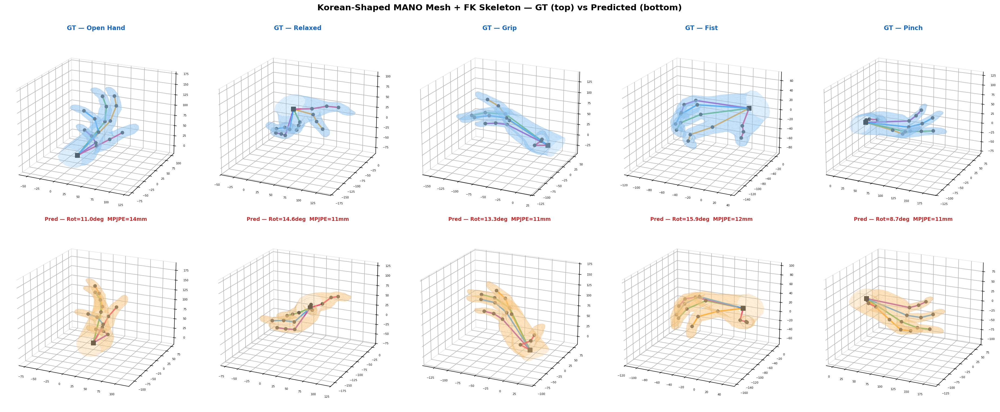

Hand Pose & MANO Mesh Reconstruction
Full RGB → 3D joints → MANO rotations → posed mesh pipeline. Hybrid architecture combining DINOv2 visual tokens with SemGCN-encoded 2D landmarks via cross-attention. IEF-style iterative refinement with combined geodesic + Frobenius rotation loss. Korean-shaped MANO template rebuilt for rig compatibility (passed FK/LBS audits).
- PyTorch
- DINOv2 ViT-S/14
- SemGCN
- MANO FK/LBS
- FreiHAND · HO3D · InterHand2.6M